Welcome to Twitch Basics where information is provided to ultimately help people have a more fluent and knowledgeable time when using Twitch. Click any of the headers above to get started!
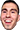 4Head- Face of streamer, Cadburry - Represent laughing.
ANELE- Face of Twitch staff member, Anele - Represents people from the middle east.
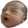 BabyRage- Face of streamer Arteezy’s child - Represents someone who is angry.
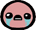 BibleThump- Face of Isaac, from the game,’The binding of Isaac.’- Represents crying or
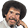 CoolStoryBob- Face of Bob Ross- Represents no interest in what someone is saying.
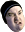 DansGame- Face of streamer, DansGaming - Represents disgust.
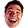 EleGiggle- Face of streamer, Elegy - Represents laughter.
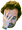 FailFish- Face of streamer, SpamFish - Represents the moment a fail occurs.
HeyGuys- Face of Twitch staff member, Seloshina - Represents a greeting.
Jebaited- Face of streamer, CEOGaming
Kappa- Face of former employee, Josh DeSeno - Represents sarcasm.
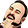 LUL- Face of streamer, TotalBiscuit- Represents the moment when something historical occurs.
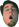 Kreygasm- Face of streamer, Kreyg - Represents the moment when something ineffably amazing happens.
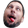 BrokeBack- Face of streamer, SeriousGaming- Represents the moment someone does something silly.
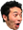 PogChamp- Face of streamer, Gootecks - Represents shock or disbelief.
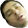 ResidentSleeper- Face of streamer, Oddler - Represents boredom.
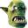 SwiftRage- Face of streamer, Swiftor - Represents an angry expression or excitement.
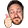 TriHard- Face of streamer, TriHex - Represents the African American community.
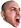 WutFace- Face of streamer, goldenboyftw - Represents shock, disgust or surprise.
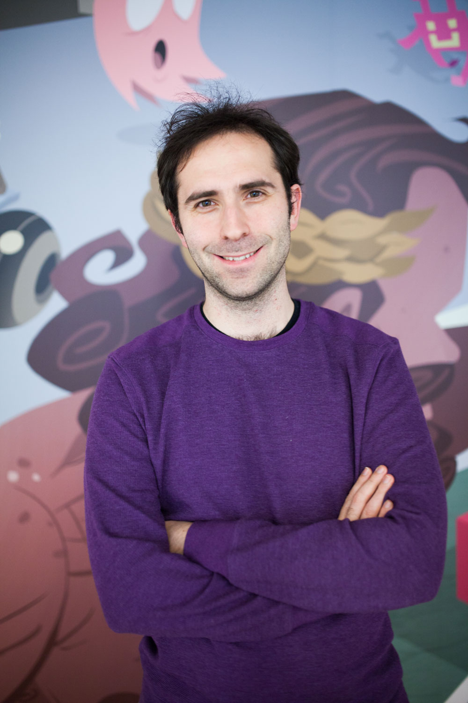
Justin Kan Emmett Shear
Justin.tv, was created by Justin Kan and Emmett Shear in 2007 as a live streaming website with several different categories. The “gaming” category became so popular that in 2011, they decided to create Twitch.tv, a live streaming platform exclusively for gaming content. In 2012, they received $15 million USD of venture capital and by 2013, another $20 million USD on top. Twitch began growing to millions of unique users a month after their beta launch in June. By 2013, the company had around 80 employees which grew to over 100 in the same year. Twitch became the most popular e-sports streaming service by a longshot. Many others have tried to compete but have had a minimal impact on the growth on Twitch. The site would continue to grow in their own hands until purchased by Amazon.com on August 25, 2014 for a whopping $970 million. Twitch continues to grow in users and implement new ideas and categories to make the platform more enjoyable.
Those who would like to stream on the Twitch platform must abide by these rules to do so. Failure to do so can lead to temporary or permanent suspension.
Laws
All streamers on the platform must abide by all laws in their proximity.
Suspension Evasion
Once your account is suspended from the site for misconduct, you are not aloud to make another account to avoid or bypass the ban.
Self-Destructive Behaviour
Any activity that that may cause you to endanger your life or lead to physical harm is strictly prohibited.
Targeted Harassment, Threats, and Violence Towards Others
Harassment, defamation, intimidation, raiding with malicious intent, or stalking of other persons or users, including Twitch Staff, Admins, or Global Moderators, is not allowed at any circumstances.
Unauthorized Sharing of Private Information
Invading and sharing the privacy of others is not allowed.
Hate Speech and other harassment
Any content or activity that facilitates, promotes, or encourages discrimination, harassment, or violence based on race, ethnicity, gender identity, sexual orientation, age, disability, religion, or nationality is prohibited.
Impersonation
Content or activity meant to impersonate an individual or organization is prohibited.
Spam, Scams, and Other Malicious Conduct
Any content or activity that disrupts, interrupts, harms, or otherwise violates the integrity of Twitch services or another user's experience or devices is prohibited.
Pornography and Other Sexually Explicit Conduct
Any content or activity involving pornography, sexual intercourse, or adult services is prohibited.
Inappropriate Broadcaster Behavior and Attire
Nudity and conduct involving overtly sexual behavior and/or attire are prohibited.
Extreme Violence, Gore, and Other Obscene Conduct
Content that exclusively focuses on extreme or gratuitous gore and violence is prohibited.
Unauthorized Content Sharing & Other Copyright Violations
Streaming content that you do not own , do not have rights to, or are otherwise not authorized to use is prohibited.
Subscribe
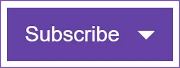
This button allows users to “Subscribe” to their favorite streamers by paying a monthly fee of $4.99 , $9.99 or $19.99. When done so, they are directly supporting who they enjoy watching, remove ads off the streamers page, receive exclusive emotes for the streamer and get access to “Subscriber only” chat.
Follow
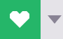
This button allows users to “follow” streamers who they enjoy watching. When done, they receive notifications and placement into their live feed of the specific streamer.
Bits
This button allows users to send “bits” to the streamer they are watching. Bits are a special, “Twitch” currency that can be bought for real money and spent by sending them with an optional message.
Watching Now
This displays the the current amount of viewers on the live broadcast.
Total Views
This displays the total amount of views accumulated since the existence of the Twitch channel.
Videos
Recordings of past broadcasts are stored here for viewing after the live broadcast is over.
Clips
Short video clips saved by users from the stream.
Followers
Amount of people following a certain channel.
Followers
How many channels a channel follows. Can be clicked to display the channels.
Share
Share the stream on social media or through email.
Report
Report stream for breaking the rules.
Whispers
Here users can interact with other users even if they do not broadcast.
Following
View the live feed of the channels you follow.
Browse
Displays the current popular games and categories that are being streamed.
Get Desktop
Download the desktop version of Twitch.
Store
Visits the Twitch store.
Setting up Twitch
Step 1. Register for Twitch
Step 2. Sign into your Twitch account through your web browser
Step 3. Select ‘Dashboard’ from the drop down menu beside your name on the top right side of the webpage.
Step 4. Enter the title of your stream and category of your stream or name of the game you are going to stream.
Setting up OBS
Step 5. Install the broadcasting application, ‘OBS.’
Step 6. Once installed, right click and run as administrator if on a windows computer.
Step 7. In settings menu of the application select ‘Broadcaster Settings’.
Step 8. Select Twitch as your streaming service and click ‘Optimize.’
Step 9. Return to your Twitch dashboard as described earlier and select ‘Stream Key.’ Follow the prompts.
Step 10. Copy the code into the Stream key box on the broadcasting application and click ‘Ok.’
Going live
Step 11. In the main OBS interface, right-click the ‘Sources’ box and select ‘Add’ then ‘Game Capture.’
Step 12. Select your game of choice from the drop down menu and select ‘Ok.’
Step 13. Right-click the ‘Sources box’ to add any additional feeds. You can add images and text to customize your layout, use ‘Monitor Capture’ to show anything on your display or select ‘Video Capture’ to use your webcam.
Step 14. Select ‘Preview Stream’ and ‘Edit Scene’ to optimize your stream settings to your liking.
Step 15. Lastly, select ‘Start streaming’ on the OBS dashboard to go live.
This website was created to provide new and existing users useful all around information of using and understanding Twitch. Users will not only learn about how to view streams, they will also learn how to become a streamers themselves. Learning about the culture and history of Twitch is important in order to feel apart of the community. This is because many users experience streams together, and use common terminology and emotes unique to Twitch.